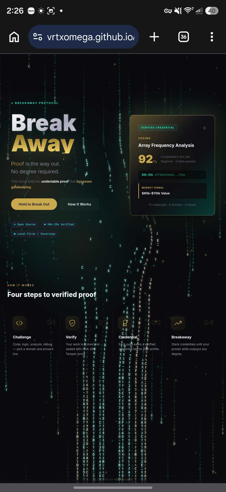

01
Breakaway Protocol — Proof I can ship
Zero-dependency credential engine, deterministic scoring, SHA-256 sealed, 2nd place VibeJam

SHA-256 sealed
VibeJam #2
What it proves
public product instinct, frontend polish, deterministic credentialing, and a clean story strangers can understand quickly.
Failure mode
handles tampering via SHA-256 seal — any edit invalidates hash